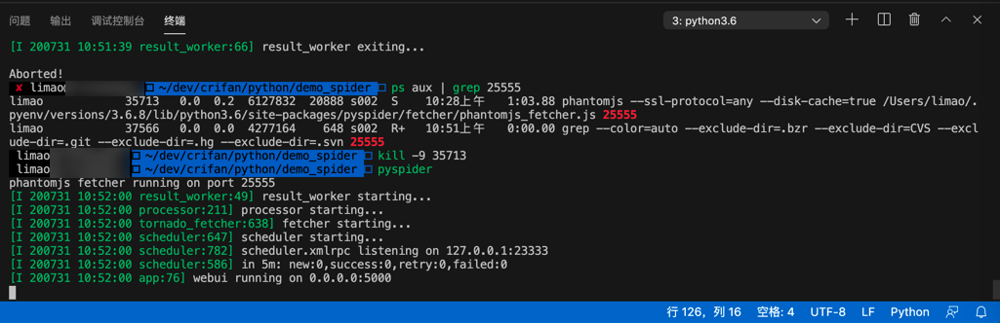
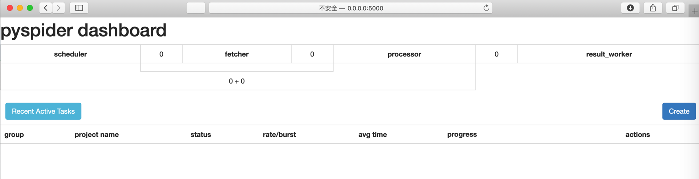
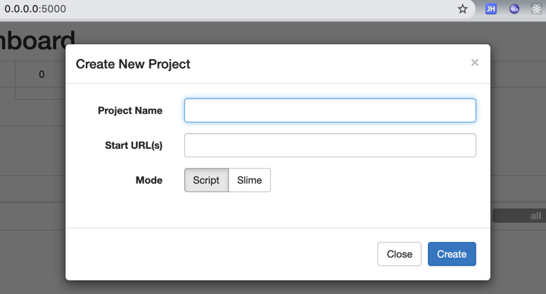
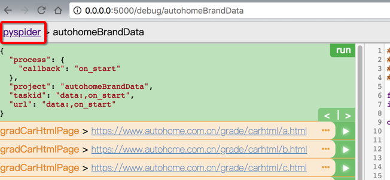
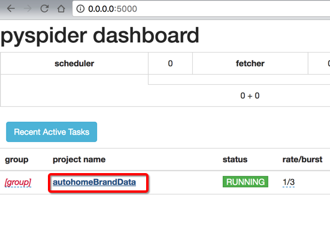
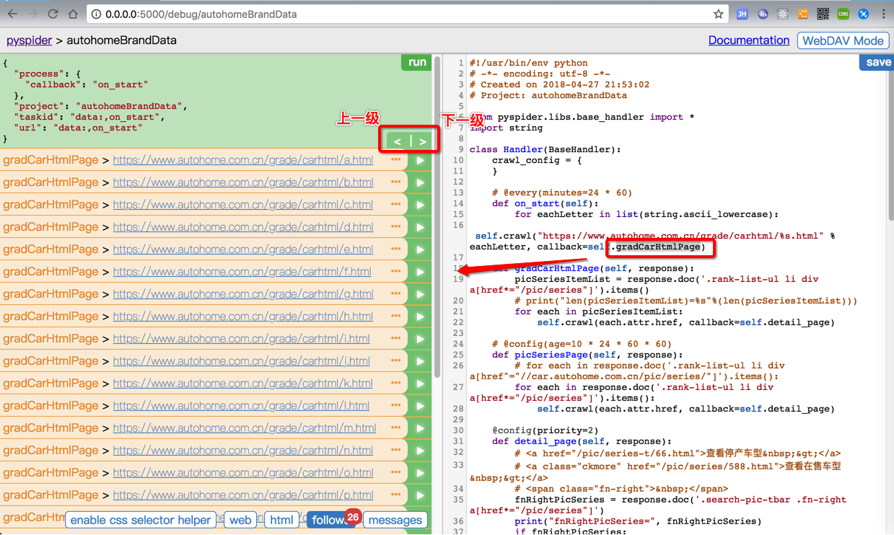
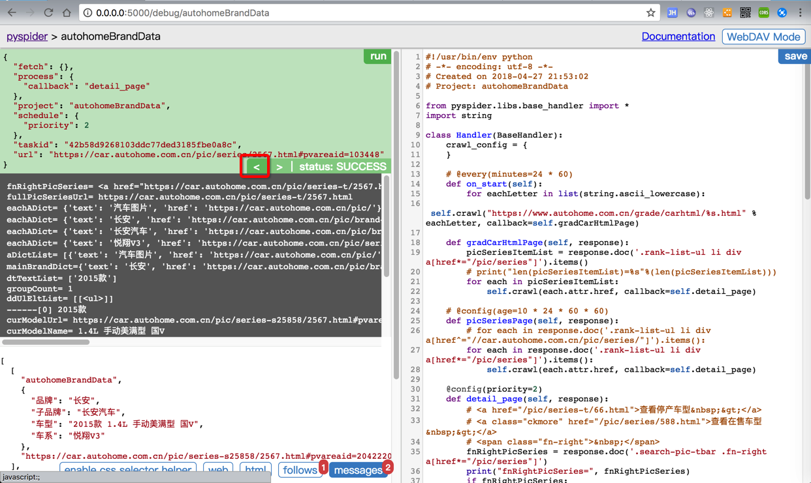
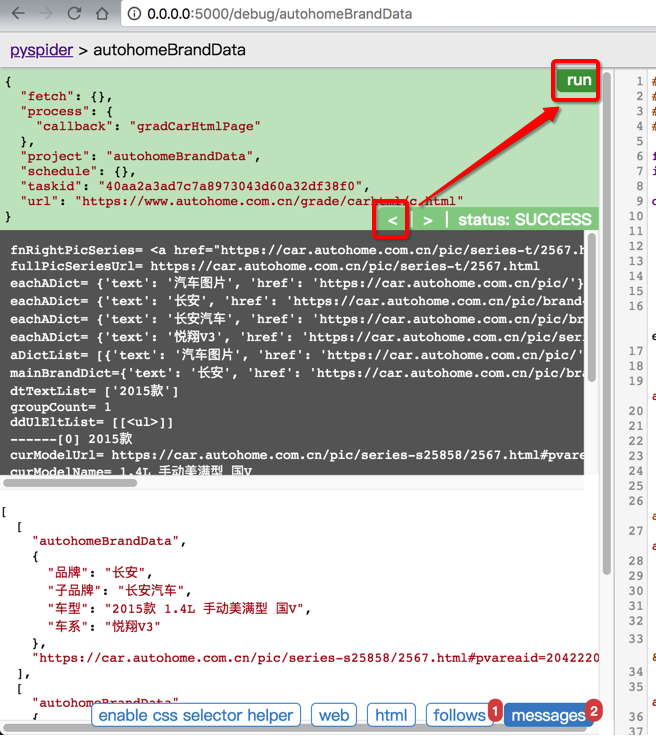
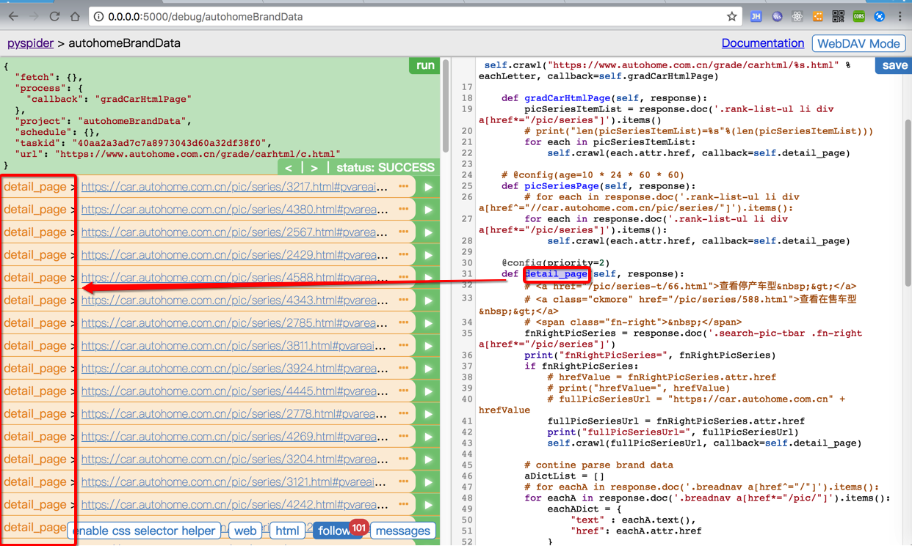
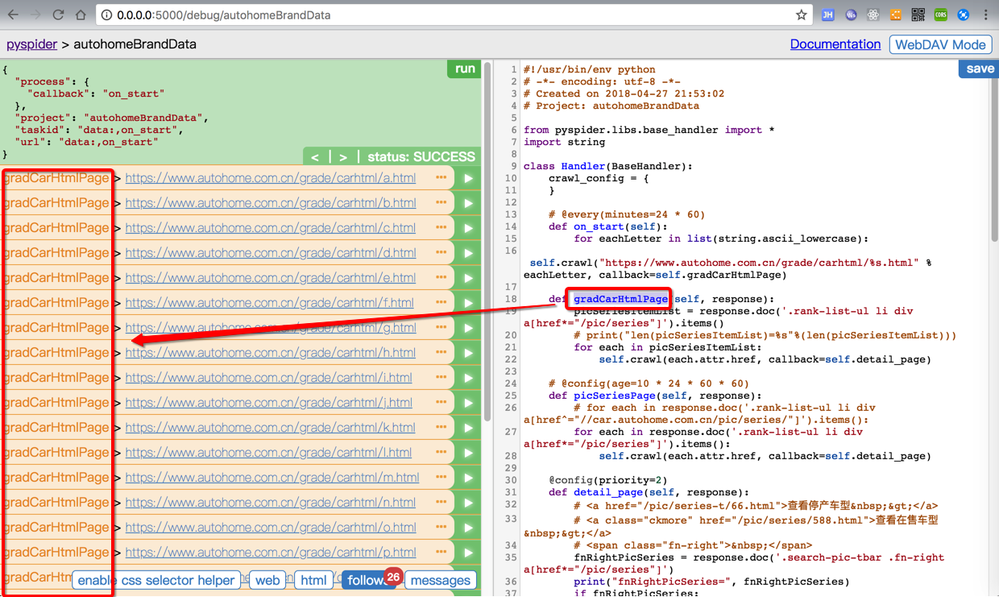

PySpider基本用法
使用PySpider的基本步骤
下面来介绍一下PySpider的使用的步骤和操作：
运行PySpider
在某个目录下的终端命令行中输入
pyspider
即可启动运行，输出举例：
pyspider
phantomjs fetcher running on port 25555
[I 200731 10:28:35 result_worker:49] result_worker starting...
[I 200731 10:28:35 processor:211] processor starting...
[I 200731 10:28:35 tornado_fetcher:638] fetcher starting...
[I 200731 10:28:35 scheduler:647] scheduler starting...
[I 200731 10:28:35 scheduler:782] scheduler.xmlrpc listening on 127.0.0.1:23333
[I 200731 10:28:35 scheduler:586] in 5m: new:0,success:0,retry:0,failed:0
[I 200731 10:28:35 app:84] webui exiting...

注：
- 如果是用虚拟环境安装的PySpider，记得先进入虚拟环境后再运行PySpider
- 比如用的
pipenv，则是pipenv shell pyspider
- 比如用的
pyspider等价于pyspider all
进入WebUI
然后去用浏览器打开：
即可进入爬虫的管理界面=WebUI

新建爬虫项目
点击Create，去新建一个爬虫项目

输入：
- 爬虫名称：
- 入口地址：自动生成的代码中，会作为起始要抓取的url
- 也可以不填
- 后续可以在代码中修改
- 也可以不填
然后再点击新建的爬虫项目，进入调试页面
新建出来的项目，默认状态是TODO
点击新建出来的项目名，直接进入调试界面
然后右边是编写代码的区域
左边是调试的区域，用于执行代码，显示输出信息等用途
调试爬虫代码
编写代码，调试输出信息，保存代码
调试代码期间，对于想要返回上一级：
先说之前不熟悉的时候的操作：
之前调试运行时，不知道还有回到上一级，在想要返回上一级时，都直接是点击左上角的项目名字

返回项目列表：

然后重新进去，重新点击Run，直到跑到对应的层级，去继续调试。
再说后来知道了PySpider内置支持这种逻辑操作：
PySpider对在调试期间所需要在上一个连接和下一个连接之间切换的操作，支持的很好：
点击 < | > 的 < 或 >，则可以 返回上一级 或 进入下一级
实际效果演示：

想要返回上一级的爬取函数的话，点击 左箭头

然后再点击Run：

然后就可以返回上一级了。
然后也才注意到，每行的follow的左边开始显示的是：callback函数名
此处的是detail_page

而对应的上一级的结果中，也是上一级的callback：

运行爬虫去爬取数据
调试完毕后，返回项目，status改为DEBUG或RUNNING，点击Run
想要暂停运行：status改为STOP
保存已爬取的数据
当爬取完毕数据，需要保存下来时，可以有多种保存方式：
- mysql数据库
- MongoDB数据库
- CSV或Excel文件
保存到csv或Excel文件
基本思路：确保自己代码中，最后return返回的字段是你要的字段
如何得到CSV文件：在任务运行期间或完毕后，去Results-》点击下载CSV，即可得到你要的csv格式的数据文件。
结果：PySpider会自动在已有字段中加上额外的url字段
用VSCode编辑csv文件
- 如果想要去除多余的不需要的
url字段，则可以通过文本编辑器，比如VSCode去列编辑模式，批量删除，或者查找和替换，都可以实现 - 最后会多余一列，标题是 …，内容全是
,{}，所以直接用编辑器比如VCScode去替换为空以清空，即可
详见：
【已解决】PySpider如何把json结果数据保存到csv或excel文件中 – 在路上
Excel去打开CSV文件结果乱码
csv文件编码默认为UTF8（是好事，通用的），但是如果用（不论是Mac还是Win中的）excel去打开，结果（估计对于中文系统，都是）会默认以GKB（或GB18030）打开，所以会乱码